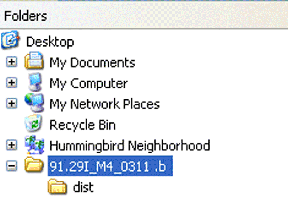
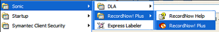
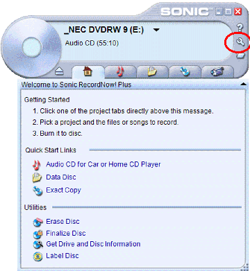
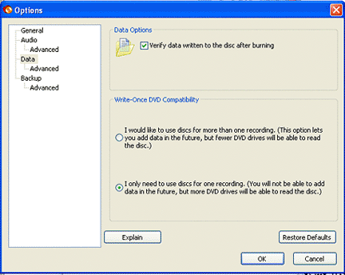
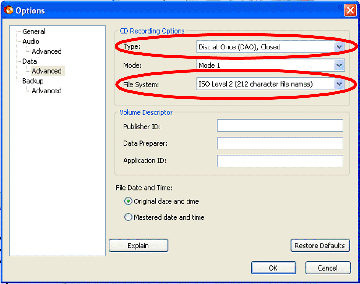
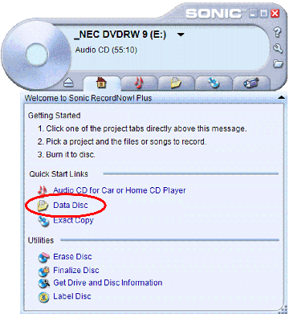
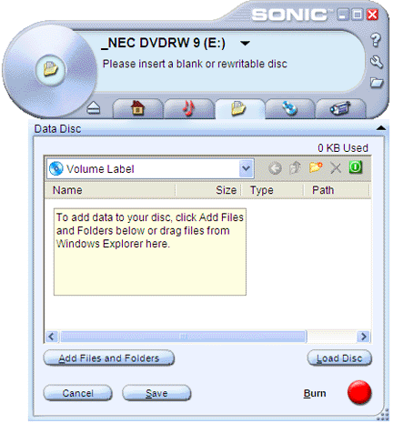
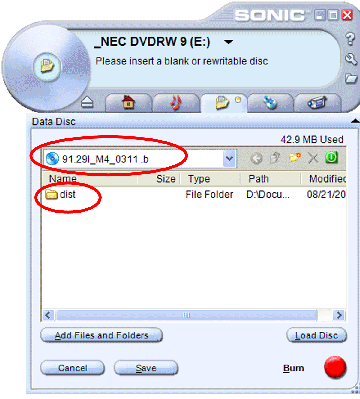

Operating Documentation
Direction 5440000, Rev# 5
Signa HDxt Service Methods
Module Version 1.0, Version Date 5/15/07
Operating Documentation |
| Required Persons | Preliminary Reqs | Procedure | Finalization |
|---|---|---|---|
| 1 |
This procedure provides the necessary steps to create a CD of a downloaded software patch using the Sonic™ RecordNow! Plus Software program.
| Last Revised | 02/19/2007 |
| Item | Qty | Effectivity | Part# | Manufacturer |
|---|---|---|---|---|
| Blank Recordable CD-ROMS | - | - | - |
| Condition | Reference | Effectivity |
|---|---|---|
Sonic™ RecordNow! Plus, version 7 or later, must be loaded on the laptop, if not, load it from the D610 Laptop Supplemental disk provided with the laptop deployment | - | - |
Create a directory on your desktop for the patch download. The patches MUST end up in directory called dist. Create a folder with the software revision, for example: 91.29I_M4_0311 .b then a sub-directory called dist. See Illustration 1.
Illustration 1: Example Of Directory Structure

Go online and log into the following URL:
Under the Projects heading, select the software revision patch needed.
Select all the files for the needed revision. Make sure that both the Readme Files and Download Files are downloaded to the newly created directory on the laptop.
| NOTE: | Sonic™ RecordNow! Plus must be loaded on the laptop, if not, load it from the D610 Laptop Supplemental disk provided with the laptop deployment |
Place a blank CD-ROM in the CD-ROM drive of the laptop.
Once the laptop recognizes a blank CD-ROM, Sonic™ RecordNow! Plus program should launch automatically. If it does not, access the software application as follows:
Select [Start].
Select Programs => Sonic =>RecordNow! Plus => RecordNow! Plus. See Illustration 2.
Illustration 2: Software Path

The main screen will display. See Illustration 3.
Illustration 3: Sonic Main Screen

Select the Wrench on the upper right side of the screen. See Illustration 3.
This will display the Options screen. Select Data on the left side and make sure the settings are the same as shown in Illustration 4.
Illustration 4: Options Screen

Under Data, select Advanced. See Illustration 5.
Illustration 5: Data => Advanced Screen

Make sure that Type: and File System is set as listed above (Illustration 5).
Click [OK].
Select Data Disk as shown in Illustration 6.
Illustration 6: Main Screen, Data Disc Selection

The Data Disc screen will display. See Illustration 7.
Illustration 7: Data Disk Screen

Click on the words, Volume Label and type in the Patch revision information, so it is similar to what is shown in Illustration 8.
Illustration 8: Data Disk Project Screen

In the Explorer window, select the dist directory created in Download a Software Patch, Step 1, drag it into the window shown in Illustration 7.
Click the button.
Once completed eject the disk and label with a Sharpie (Felt Tip) marker.
Continue with patch installation on the system host using the Install GUI.
No finalization steps.